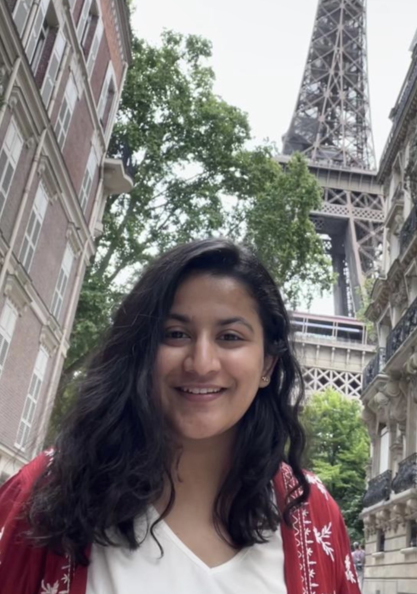

Vasudha Devarakonda
About
I am a second-year Ph.D. student at Texas A&M University, advised by Dr. Khanh Nguyen. My research explores GPU cluster scheduling and memory management for cloud-based deep learning. Previously, I worked with Dr. Chia Che Tsai on serverless computing, studying workload aggregation and disaggregation.
CV College Station, TX
Research
My research focuses on GPU cluster scheduling and memory management to improve the efficiency of deep learning workloads in cloud environments.
- Memory efficiency for AI workloads
- Multi-tenant cloud systems
- Training and inference
Publications
Experience
Jan 2025 — Present
Ph.D. Student
COSMOS, Texas A&M University · Advisor: Dr. Khanh Nguyen
Aug 2026 — Present
Teaching Assistant
Distributed Systems and Cloud Computing, Texas A&M University
Nov 2023 — 2024
Graduate Research Assistant
SysDev, Texas A&M University · Advisor: Dr. Chia Che Tsai
Jul 2021 — Jul 2023
Software Engineer Associate
Research and Development, Siemens Digital Industries Software
Education
Texas A&M University
Ph.D. Student, Computer Science and Engineering
Texas A&M University
M.S. Student, Computer Science and Engineering (Transferred)
Visvesvaraya National Institute of Technology
B.Tech., Electronics and Communication Engineering
Service and recognition
- Ms. Madhur Dahake Medal, B.Tech. ECE
- VNIT basketball player and inter-NIT team captain